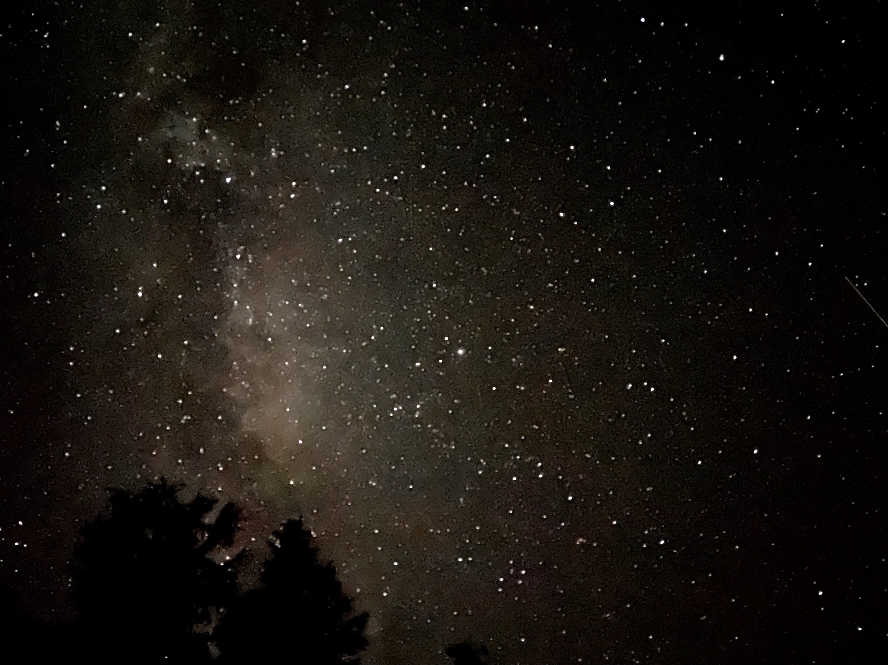
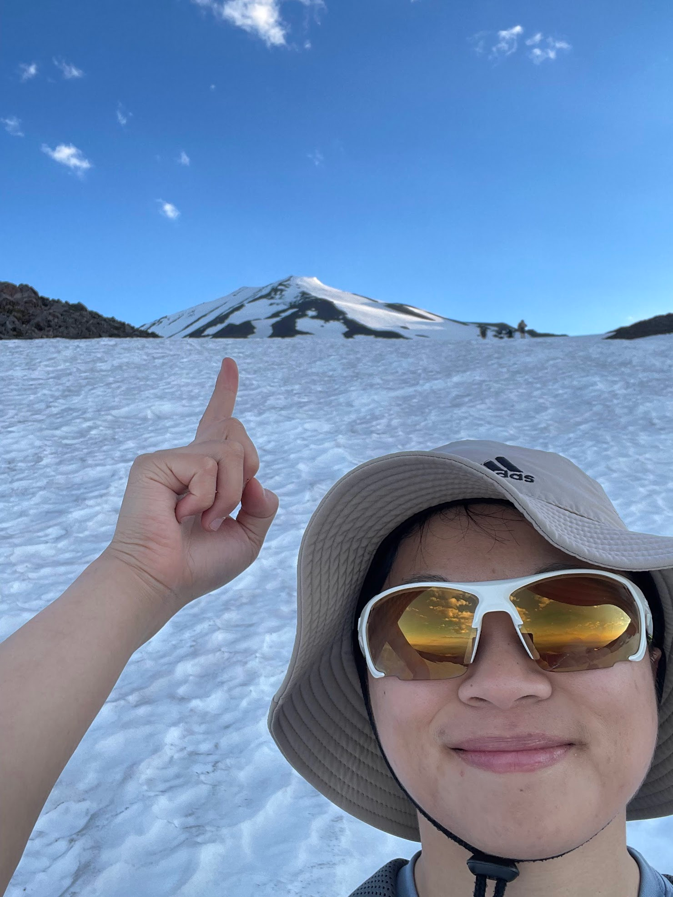
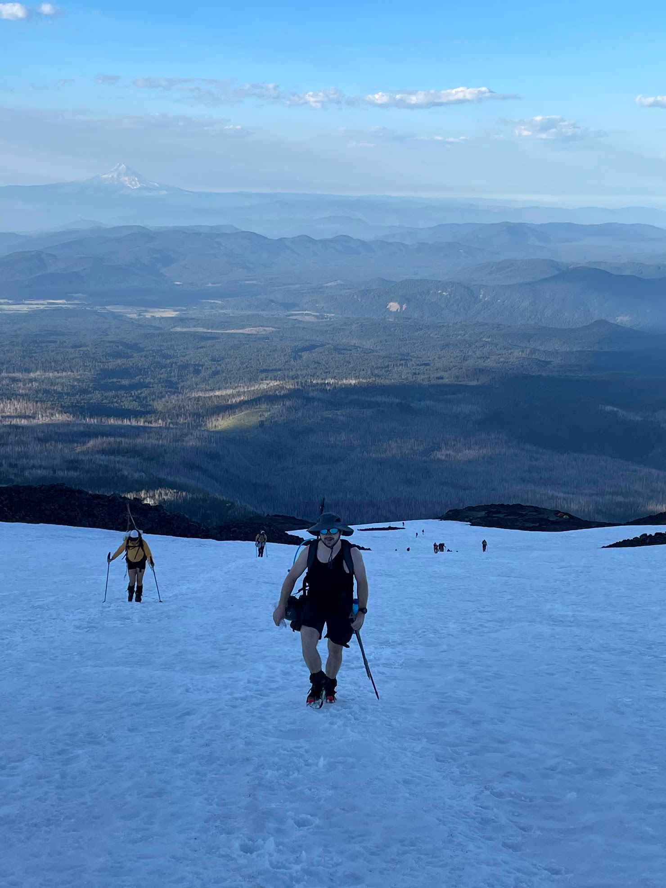
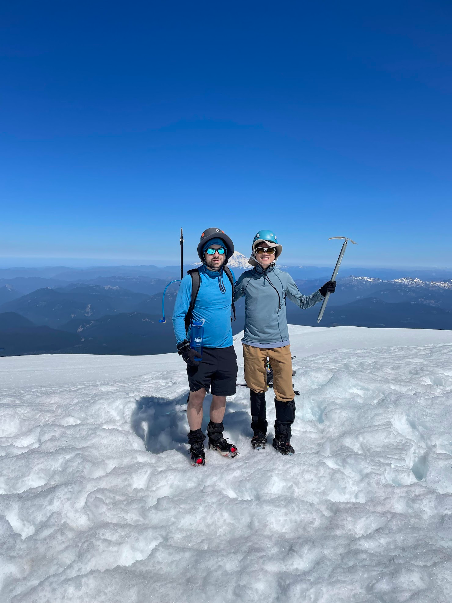
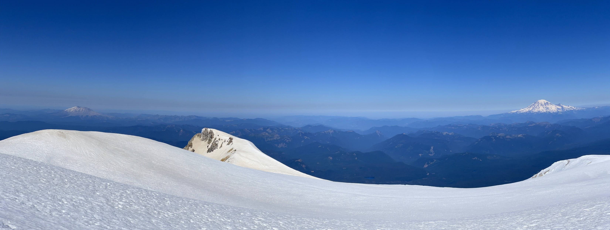
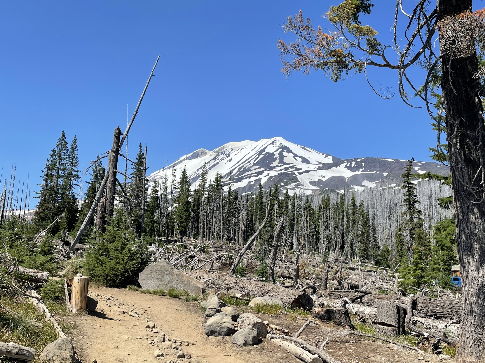

AdamsStats.png
MtAdamsSummit2.png
MtAdamsSummit.png
This past weekend, my friend Claire invited me to climb Mt. Adams! She was snowed off of the guided Mt. Rainier trip a few months ago, and has been picking off other Cascade volcanoes ever since. Mt. Adams is the second-highest mountain in Washington State (12,281 ft, https://en.wikipedia.org/wiki/Mount_Adams_(Washington). Despite the imposing height, it has a fairly low profile in popular culture. Ariana decided to pass on this one, since 6799 vertical feet in a day is a bit much, the drive is far, and she just returned from a business trip to SF.
Mt. Adams is a very safe mountain, and it's blessed with perennial snowfields rather than glaciers on the main summit route. The lack of glacial hazards, combined with a lack of exposure, makes this one of the best mountains to climb as an independent (non-guided) climber. Typically Mt. Adams is done in 2 days, camping at 'Lunch Counter', at 9000' above sea level.
We took advantage of the ever-continuing heat wave to make an 'alpine-style' ascent in one day. We carry the essentials[1], but we were able to considerably reduce the necessary equipment. There's just no need for an emergency camping setup when the nightly low is in the 50F range on the summit. Here was the final equipment list[2]. Just 18lb of equipment, including food and water.
It's a 6+ hour drive, and I made it longer by missing the turn. I was pointing out some interesting looking rocks to Claire, commenting on how they looked like some rocks I climbed once at Vantage. Then, I saw a sign for Vantage, meaning I drove an extra 30 miles east. On the positive side, we got views of the Columbia River multiple times!
We ended up getting there at about midnight after leaving Friday afternoon. The final three miles of road are unmaintained & unsuitable for a sedan, but we were able to slowly go through or around the potholes.

We set up camp in the dark at the parking lot, and were awakened by about 60 people with headlamps walking past at 3:30am! There was a Gonzaga graduate school course on 'leadership and self reliance', and the final project was to climb Mt. Adams? We packed up the tent and headed up the mountain at 4:10am, right before sunrise.
Claire takes about an hour or two to warm up fully, whereas I start out fast and get slower and slower. Our break-even point is about 2 hours in. By the end, Claire is running circles around me, bored & taking lots of photos like Chris (she took all of these!). I started to get quite tired after about 5-6k vertical feet (near the false summit), but the end was in sight and we finished it up! It took about 7 hours to reach the summit.


The summit (with Rainier in the background)

Mt. Saint Helens (left) and Mt. Rainier (right)

I started to get a bit of a headache from the altitude, so we headed down rather than stay on the summit for too long. Because of the safe runouts, there's a lot of potential for glissading (controlled slide) down the mountain! This is the most fun when the snow is soft.
https://photos.app.goo.gl/WuVbkUZZtduKghAn6
https://photos.app.goo.gl/UmyS1btHy1GK95bN9
It was a great climb, and we got back to the car by 3:30pm, giving us plenty of time to get lost on the drive home.[3] Google offline maps failed us and I made some wrong turns, which added about 25 miles of dubious forest service road, before we found the town of Carson (and the highway to Portland). Back in Seattle by midnight Saturday!

-Peter
P.S. In other news, on the same day we went to Mt. Adams, Chris Wu finished 21st (15:27:28) at the 'Never Summer 100km' ultramarathon, with 14,000 vertical feet of gain: https://www.opensplittime.org/events/never-summer-2022-100k/summary.
P.P.S. I finally cracked the 6-minute mile (5:56)! https://www.strava.com/activities/7546263200
[1] Essentials:
Navigation,
Headlamp,
Sun protection,
First aid,
Shelter,
Clothes,
Food,
Water,
Fire,
Knife
[2] Equipment List:
Climbing Equipment:
crampons, ice axe, poles, trailrunners (yes, I wore running shoes) & gators, rock climbing helmet
Clothes:
1x sun hat, 1x shorts & shirt, 1x softshell pants, 1x nylon long-sleve shirt, 1x raincoat & rain pants, 1x sunglasses, 1x watch, 1x gloves, 1x socks
Water:
~2.5L capacity, filter @ morrison creek
Food:
~1500 calories for Saturday, plus some extra for Friday.
Misc:
1oz Sunscreen, Headlamp
Normal equipment we were able to skip:
Bivy sack - leaving shelter behind when windchill on the summit is >32F
Sleeping bag - leaving shelter behind when windchill on the summit is >32F
Sleeping pad - leaving shelter behind when windchill on the summit is >32F
Parka
Mittens
Thick wool socks
Mountaineering boots
Tent